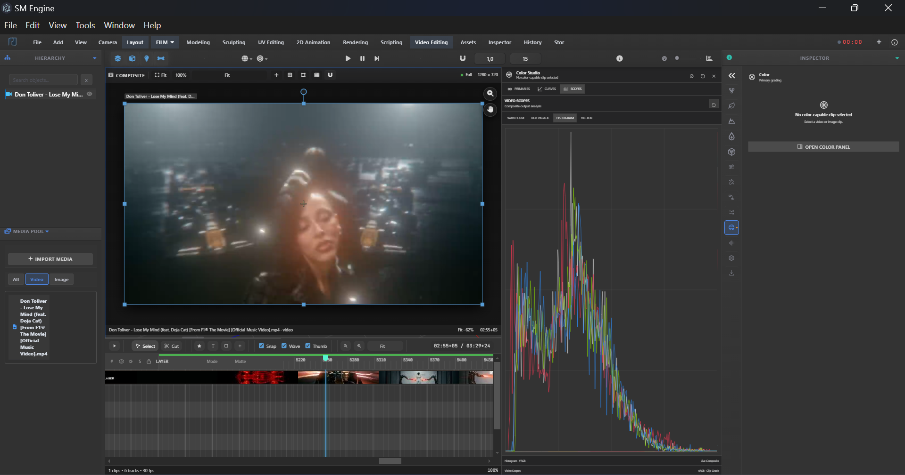
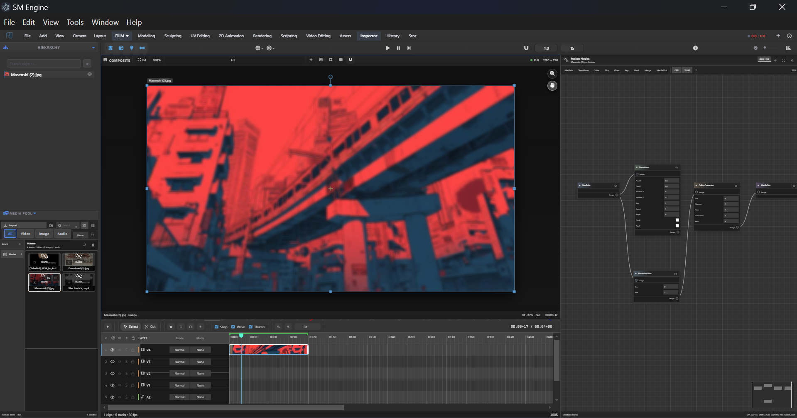
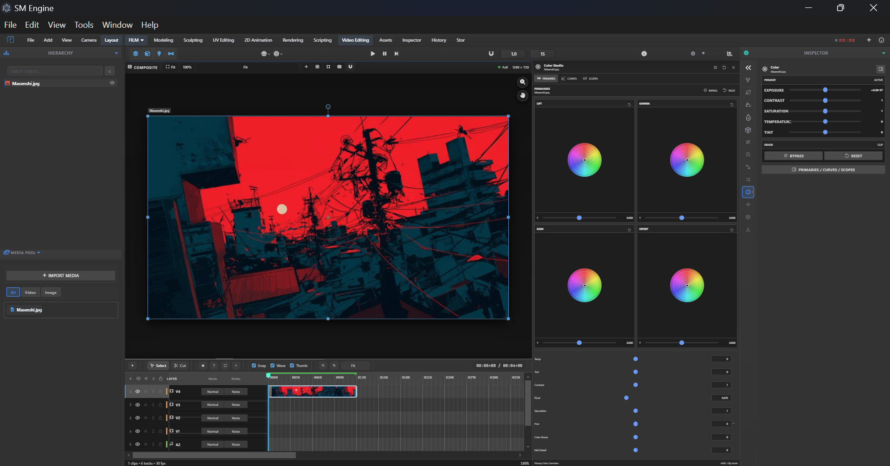
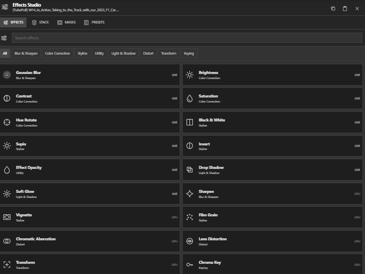
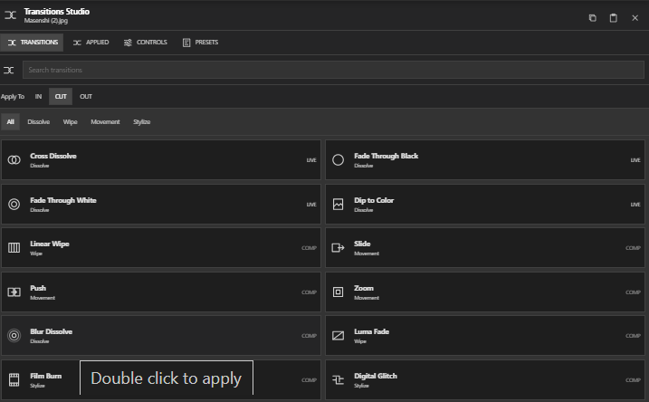

Video Effects & Color
The SM Engine provides a deep, GPU-accelerated compositing and grading pipeline via the
video-editing/effects/ and video-editing/color/ subsystems. From basic
primary color correction to complex procedural stylization, the effects library enables cinematic
post-production directly within the editor.
Effects Library

Defined within VideoEffectsLibrary.js, effects are organized into logical categories.
All effects are processed in real-time utilizing compute shaders.
Blur Effects

| Effect Name | Parameters | Description |
|---|---|---|
| Gaussian Blur | Radius, Quality, Repeat Edge Pixels | Standard isotropic blur algorithm. High quality modes increase sample count. |
| Motion Blur | Angle, Samples, Phase | Directional blur simulating camera shutter or fast-moving subject. |
| Radial Blur | Center X/Y, Amount, Type (Spin/Zoom) | Circular or depth-oriented blurring originating from a definable origin point. |
| Zoom Blur | Center X/Y, Intensity | Specialized radial blur simulating rapid focal length changes. |
Color & Grading Effects

| Effect Name | Parameters | Description |
|---|---|---|
| Brightness/Contrast | Brightness (-100 to +100), Contrast | Basic luminance adjustments. |
| HSL (Hue/Saturation/Lightness) | Master Hue, Saturation, Lightness | Global or channel-specific color shifting. |
| Color Balance | Shadows/Midtones/Highlights wheels | Standard 3-way color correction wheels for cinematic grading. |
| Curves | RGB Master, R/G/B individual points | Spline-based adjustment of luma and chroma responses. |
| Levels | Input/Output Black/White, Gamma | Histogram-driven dynamic range mapping. |
| Exposure | EV Stops, Offset, Gamma Correction | Photographically accurate exposure compensation. |
| LUT (Look-Up Table) | File Path (.cube/.3dl), Intensity | Applies external 3D LUTs for film stock emulation or stylistic looks. |
| Vibrance | Vibrance, Saturation | Smart saturation that protects skin tones and already highly-saturated pixels. |
Stylistic & Degradation Effects

Used to degrade or stylize the image, providing character and texture to digital footage.
- Film Grain: Procedurally generated fractal noise simulating physical film stocks. Parameters: Intensity, Size, Animated (toggle).
- Vignette: Darkens image corners. Parameters: Radius, Softness, Intensity, Color.
- Chromatic Aberration: Simulates cheap lens RGB fringing. Parameters: Red/Green/Blue shift distances.
- Lens Distortion: Barrel or Pincushion warp. Parameters: Amount, Tangential skew.
- Glitch Effect: Digital artifacting and datamoshing. Parameters: Block size, Intensity, Frequency rate, Color separation.
- Old Film: Simulates degraded celluloid. Parameters: Dust amount, Scratches frequency, Luma flicker, Sepia tone mix.
- CRT Effect: Retro television monitor simulation. Parameters: Scanline density, Screen curvature, RGB phosphor shift, Phosphor bleed.
Transitions & Overlays

Effects designed to bridge clips or composite informational data:
- Transitions: Cross Dissolve, Dip to Black/White, Wipe (Linear, Radial, Iris), Push/Slide, Zoom, Glitch Transition.
- Overlays: Lower Thirds (animated text generators), Watermark/Logo injection, Counter / Timecode burns, Procedural Noise overlays.
Effects Inspector & Stack
The core interaction model is managed by VideoEffectsInspectorPanel.js and
VideoEffectsStack.js.
Workflow:
- Select a clip in the timeline to populate the Effects panel.
- Add new effects from the browser via drag & drop or double-clicking.
- Effects populate linearly in the Effects Stack. They are evaluated top-to-bottom.
- Reorder effects by dragging their header to fundamentally change the composite result.
- Toggle an effect on/off entirely using the eye icon, or bypass the entire stack using the global bypass toggle.
- Right-click effects to copy them, allowing rapid pasting across multiple timeline clips.
Advanced Masking System
The VideoEffectsMaskPanel.js provides localized control over where an effect applies,
rather than impacting the entire frame.
| Feature | Description |
|---|---|
| Shape Masks | Create basic bounds using Rectangle, Ellipse, or Polygon tools. |
| Bezier Masks | Draw custom vector paths with pen tool for precise rotoscoping. |
| Feather & Expansion | Soften the mask edge (feathering) or expand/contract the mask boundary dynamically. |
| Invert | Flips the mask, applying the effect only to areas outside the drawn shape. |
| Motion Tracking | Automatically track a mask path to moving pixels across frames using contrast-based or planar tracking algorithms. |
Presets Manager
The VideoEffectsPresetManager.js allows users to save complex, multi-effect chains as a
single reusable preset.
- Save & Load: Capture the current state of the Effects Stack, including parameter values and relative keyframes, into a named preset.
- Import/Export: Share presets as JSON payload files with other editors or projects.
- Built-in Categories: The engine ships with libraries of presets including Cinematic, Social Media, Vintage/Retro, and Technical/Utility.